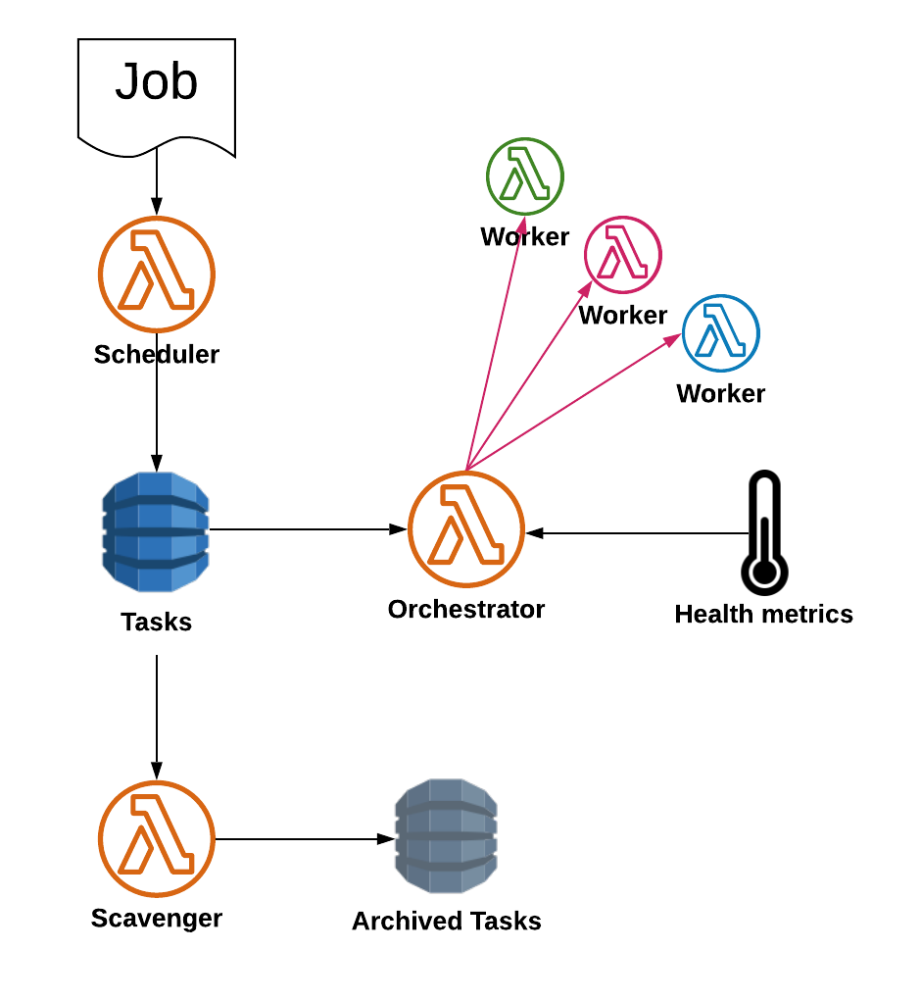

Essential Workflow Schema

Workers
The Worker functions themselves are your functions that require Orchestration. sosw package
has multiple components and tools that we encourage you to use in your Workers to make the code DRY and stable:
statistic aggregation, components initialization, configuration automatic assembling and more…
In order to be Orchestrated by sosw, the functions should be able to mark tasks they receive as completed
once the job is done. If you inherit the main classes of your Lambdas from Worker this will be handled
automatically. The default behaviour of Workers is not to touch the queue, but to call a Worker Assitant
lambda to mark tasks as completed.
Read more: Worker
There could be defined three different Workflows.
Scheduling
Scheduling is transformation of your business jobs to specific tasks for Lambda Worker. One task = one invocation of a Worker. Scheduler provides an interface for your Business Applications, other Lambdas, Events (e.g. Scheduled Rules) to provide the Business Job.
Chunking of the Payload happens following the rules that you pre-configure. One of the built-in dimensions for chunking is calendar.
Scheduled tasks go to a stateful queue to be invoked when the time comes.
Read more: Scheduler
Orchestration
The Orchestrator is called automatically every minute by AWS EventBridge Scheduler. It evaluates the status of Workers at the current moment, the health of external metrics the Workers may depend on (e.g CPU lod of some DB, IOPS, etc.) and invokes the appropriate amount of new parallel invocations.
Read more: Orchestrator
Scavenger
The Scavenger is called automatically every minute by AWS EventBridge Scheduler.
It collects the tasks marked as completed by the Workers and archives them.
If the task did not successfully accomplish it tries to re-invoke it with configurable exponential delay.
In case the task completely fails after several invocations, the Scavenger marks it is dead and removes
from the queue to avoid infinite retries. In this case some external alarm system: SNS or Lambda
may be triggered as well.
Read more: Scavenger
Installation
`sosw` requires you to implement/deploy several Lambda functions (Essentials) using the appropriate core classes. The deployment is described in details, but assumes that you are familiar with basic AWS Serverless products.
Another deployment requirement is to create several DynamoDB tables.
Once again, the detailed guide for initial setup can be found in the Installation.